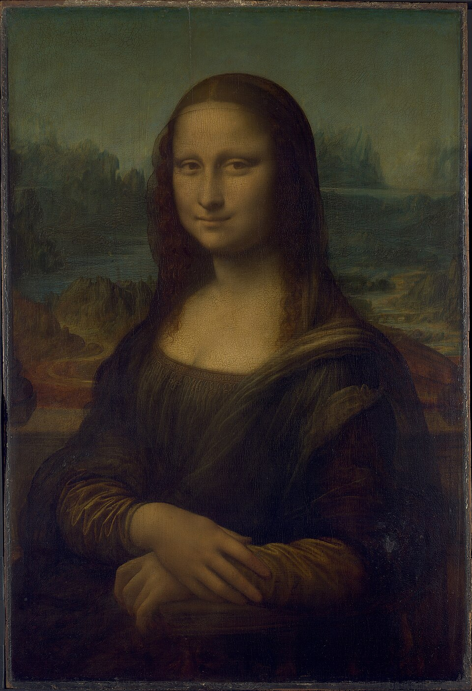
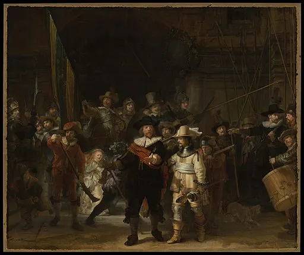
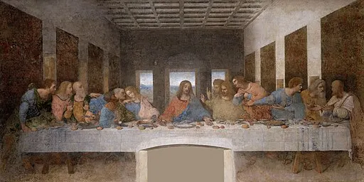

Mona Lisa:

The Mona Lisa painting was created by the Italian Renaissance artist
Leonardo da Vinci. He began working on the portrait around 1503,
and it is believed he continued refining it until approximately 1517.
The painting, which depicts Lisa del Giocondo, the wife of Florentine merchant
Francesco del Giocondo, is renowned for its enigmatic expression, subtle use of
sfumato technique, and lifelike quality. It is now housed in the Louvre Museum in Paris,
where it remains one of the most famous and visited artworks in the world.
Information
| Artist | Year |
|---|---|
| Leonardo da Vinci | 1503–1517 |
The Night Watch:

Militia Company of District II under the Command of Captain Frans Banninck Cocq,
also known as The Shooting Company of Frans Banning Cocq and Willem van Ruytenburch,
but commonly referred to as The Night Watch
(Dutch: De Nachtwacht), is a 1642 painting by Rembrandt van Rijn.
It is in the collection of the Amsterdam Museum but is prominently displayed in the Rijksmuseum
as the best-known painting in its collection. The Night Watch is one of the most famous Dutch
Golden Age paintings.
Information
| Artist | Year |
|---|---|
| Rembrandt van Rijn | 1642 |
The Starry Night:

The Starry Night is one of the most famous works by Dutch painter
Vincent van Gogh, created in 1889 while he was living in an asylum
in Saint-Rémy-de-Provence, France. The painting depicts a swirling night sky filled
with stars, above a quiet town and rolling hills. The expressive brushwork and bold use
of color make it a masterpiece of Post-Impressionism. Today, the painting is housed in
the Museum of Modern Art (MoMA) in New York City.
Information
| Artist | Year |
|---|---|
| Vincent van Gogh | 1889 |
The Last Supper:

The Last Supper is a late 15th-century mural painting by
Leonardo da Vinci, created between 1495 and 1498 for the Convent of Santa Maria delle Grazie
in Milan, Italy. It depicts the dramatic scene of Jesus Christ with his twelve apostles
during the moment he announces that one of them will betray him.
The composition, perspective, and emotional intensity make it one of the most influential works
of the Renaissance. Despite deterioration over time, it remains an iconic masterpiece.
Information
| Artist | Year |
|---|---|
| Leonardo da Vinci | 1495–1498 |